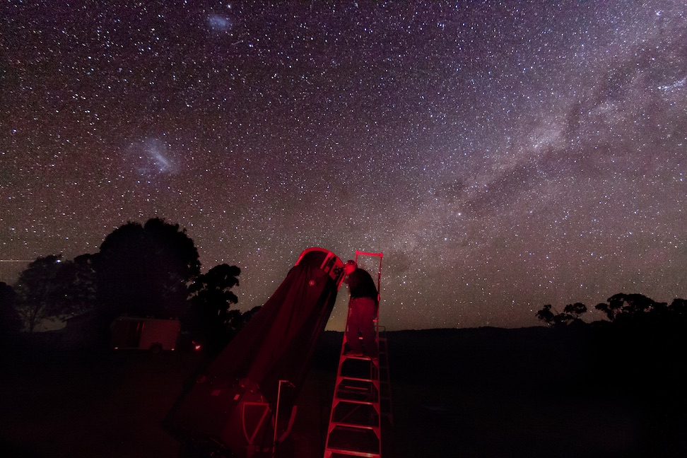
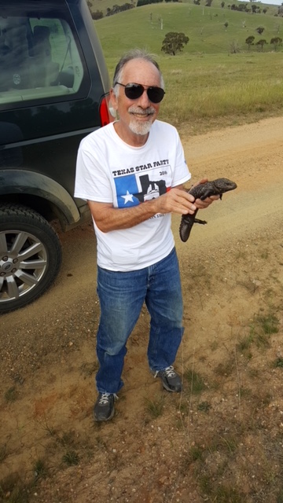
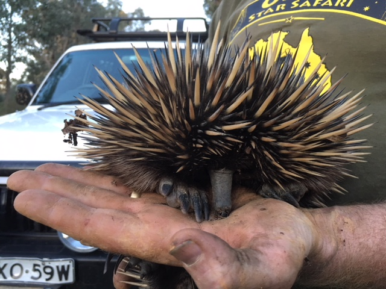
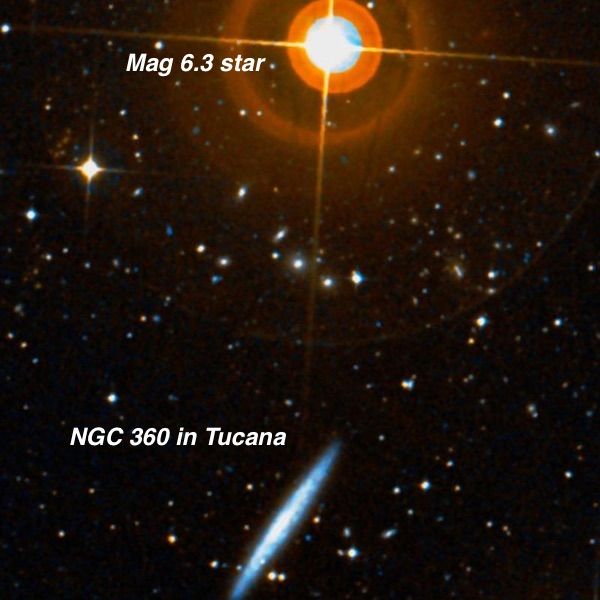
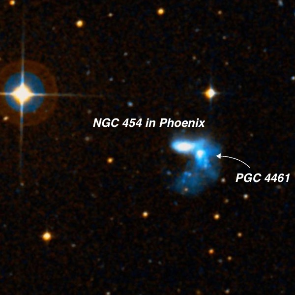
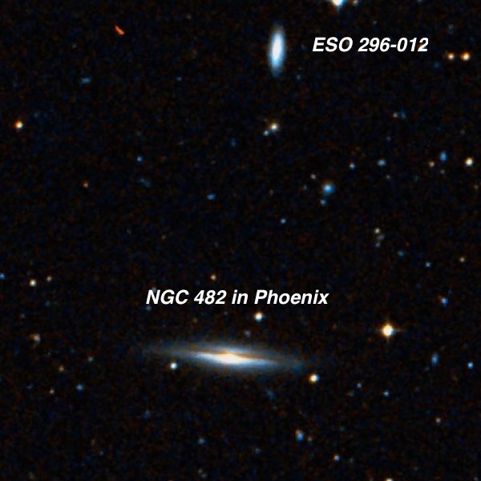
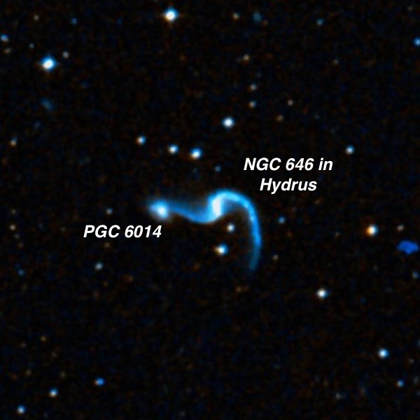
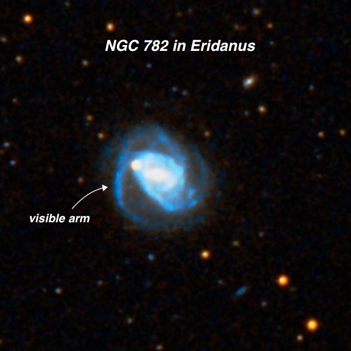
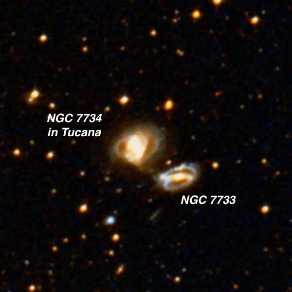

Observing Adventure in Australia (Part I)
During the October new moon period I hopped on a 15-hour flight from San Francisco to attend the week-long “Spring" OzSky Star Safari (ozsky.org), which took place on the 6300 acre Markdale Homestead, a large working sheep ranch and country estate with a beautiful Heritage garden located 3 1/2 hour drive west of Sydney in the Central Tablelands. A group of Sydney amateurs, in conjunction with the Three River Foundation (3RF) Australia (www.3rf.com.au/) offer this twice-a-year event, with the main star party hosting 3 dozen or so attendees in the Fall (that's around March-April downunder) at Coonabarabran, near the Warrumbungles National Park and the Siding Springs Observatory. It's mostly attended by U.S. amateurs and I'd guess half are repeaters, who are itching for more of the same. What's the draw? If you've been to the southern hemisphere, you know it beats the north, hands down, in terms of open clusters, globular clusters, emission nebulae and the single most impressive external galaxy in the sky -- the Large Magellanic Cloud. And experiencing of viewing the center of the Milky Way at the zenith (with typical skies ~21.8+ SQM) with jet-black dark nebulae forming the Aboriginal "Emu in the sky" is flat-out jaw-dropping.
The Aussies, led by Lachlan McDonald and Tony Buckley, provide the telescopes -- ranging in size from 14.5" to 30" (that's me on the ladder of the 30"), equipped with Argo Navis and Servocats if you don't want to star hop in unfamiliar skies, as well as a collection of Televue eyepieces. Really all you need to do to prepare is sign-up in advance, download some of their showpiece observing lists, pack your clothes and join the party! This year only 5 U.S. amateurs signed up and one had to cancel at the last minute. Lachlan brought along 4 large dobsonians -- two 18's, a 25 and a 30", so there was one scope per observer! Lodging was in two cozy stone guest cottages, built in the late 1800's.

In mid-October, the galaxy-rich constellations of Fornax, Pisces Austrinus, Sculptor, Phoenix and Horologium pass nearly overhead from Australia and eye-candy galaxies in Pavo, Dorado, and Reticulum are well placed. But even in October Sagittarius is better placed than in the U.S, and once you get used to seeing the constellation's Teapot outline completely upside down, its easy to track down obscure globulars and even Sagittarius galaxies that would be difficult from home. But the biggest treat for me is the LMC, as there is absolutely nothing remotely comparable in the northern sky -- as well as the magnificent globular 47 Tucanae, which must be seen to be believed at high power.
We were pretty fortunate with the weather - 4 straight all-nighters to start the week, then 2 nights of clouds, and a clear 7th night. So, 5 for 7 overall and enough observing time to log about 250 objects. I came prepared with a list of 300 deep sky targets, but a subset of 34 NGCs had a special meaning. These were the only ones I had remaining to observe and record out of the 7840 entries in the 1888 New General Catalogue. I’m not sure if the entire NGC (covering +89 to -89 dec) has been attempted or previously completed by other obsessed amateurs. This huge project been percolating a long time -- I've been slowly working on it (along with many other projects such as Hicksons, Arps, Palomar globulars, Flat galaxies, Abell planetaries, rich galaxy clusters, etc. etc.) for quite awhile -- 37 years to be precise! And along the way, the instruments evolved from a 6" f/5 Edmund, C-8 Schmidt-Cass, 13.1" Odyssey I, 17.5" Sky Designs (early truss-tube dob), 18" f/4.3 Starmaster and 24" f/3.7 Starstructure, along with a little help using Jimi Lowrey's 48-inch ;-).
Four or five years ago I finished all the NGCs accessible from northern California (down to -40° declination), but there was still over 300 remaining far southern objects. After a couple more trips to Oz that number was whittled down to 34, of which 32 were well placed this time of year (that's why I missed them a year and a half ago from Coonabarabran). The final two would have to be caught low in the sky either at dusk or dawn, but I knew they would be doable. But first a bit of background on the NGC...
Roughly 2500 deep sky objects in the NGC were discovered by musician-turned-astronomer William Herschel from England and another 1700 by his son John, at Slough, England and later the Cape of Good Hope in South Africa. Their discoveries were made with 18.7-inch speculum reflectors -- roughly equivalent in light-grasp to a modern 14- or 15-inch. The next largest contributors in terms of visual discoveries were Albert Marth (over 500 using a 48-inch speculum reflector on the island of Malta), Lewis Swift (over 450 galaxies from Rochester, NY and southern CA using a 16-inch Clark refractor) and Edouard Stephan (over 400 from Marseilles using a 31-inch silver-on-glass reflector). The largest scope that contributed to the NGC was Lord Rosse's 72-inch Leviathan and the discoveries made with this scope go down to mag 16.5V. Within the next few years after the publication of the NGC, the golden era of visual deep sky discovery would wind down as long-exposure photographic plates revealed thousands of dim galaxies beyond visual reach and which now have IC (Index Catalogue) designations.
During the first two nights I logged 33 of the remaining objects (mostly galaxies in Phoenix and Tucana) using the 25" f/5 Obsession, leaving only one target remaining for the third night -- NGC 2932 -- which is nothing more than a Milky Way star cloud in Vela that captured John Herschel's attention. He called it "an enormous cluster of 1 deg or 1.5 deg, very rich in stars of all magnitudes, from 8m downwards, which merits registry as a sort of telescope Praesape. It may be regarded as a detached portion of the milky way." With so many more mouth-watering targets nearby, most amateurs would probably put NGC 2932 in the "Why bother?" bin. But this one was a little more special to me.
I tracked down the field after 3:00 AM on the third night using an 18-inch Obsession at 79x (1° field of view). I looked up and noticed Orion was 50° up and of course, turned topsy-turvy on its head! Sirius and Canopus, the two brightest stars in the sky, hovered at 60° altitude and dominated the eastern skies. Truthfully I didn't find the star field of NGC 2932 very exciting, but I carefully examined it and a 1/4 degree richer section caught my eye as appearing more cluster-like. The next day I checked the online SIMBAD database and was pleased to find this collection was catalogued as the 1,694th Milky Way cluster in a 2012 compilation (https://tinyurl.com/yb37vzva). So perhaps a real cluster is actually embedded in Herschel's star field.
During the daytime we toured the property, panned for gold, and watched mobs of 'roos bounding across as the fields when we drove by (actually this was a serious road hazard whenever we returned to the estate at twilight) and closely examined some of the other natives (two attached). A bit scary, though, was a visitor who slithered very close to the observing field in the late afternoon -- an Eastern Brown snake, the second most venomous in the world! For some false sense of security, I took all of my notes that night at the shelf on the top of a tall ladder, instead of my usual observing table!


Of the last 34 NGCs that I observed to complete the entire catalogue, here's a rundown of my favorites. All were observed using the OzSky 25” f/5 Obsession, using 244x and 397x. In the next observing report I’ll highlight some of the other deep sky objects I observed during the week
— Steve Gottlieb

NGC 360 = ESO 079-014 = FGC 119E = PGC 3743 01 02 51.4 -65 36 36 V = 12.6; Size 3.5'x0.5'; Surf Br = 13.0; PA = 144°
Using 244x and 397x, NGC 360 was a treat — an excellent large, thin edge-on NW-SE with tapered tips, stretching ~2.5'x20". The center is slightly brighter with a mottled or clumpy appearance. A faint double (mag 14.5/15) at ~12" is just west of the southeast end. Two bright stars are near; mag 8.8 HD 6221 lies 6.5' WSW (just outside the field at 397x) and mag 6.3 HD 6311 lies 9' N.

NGC 454 = ESO 151-036 = PGC 4468 01 14 23.0 -55 23 54 V = 12.3; Size 1.8'x1.8'; Surf Br = 13.5
NGC 454 was resolved into a neat contact double system at 244x [28" separation between centers], though better viewed at 397x. The main component is on the east side and appeared moderately bright, fairly small, elongated ~2:1 E-W, ~50"x25". At 397x it was sharply concentrated with an extremely high surface brightness elongated core and stellar nucleus. The interacting companion, PGC 4461 , appears as an appendage, poking out of the southwest side and was easily seen at 397x. It appeared faint or fairly faint, small, probably elongated ~3:2 N-S, ~20"x14". On the DSS, this galaxy is highly disrupted with plumes and knots. A mag 11.9 star lies 1.6’ NNW (in this DSS image).

NGC 482 = ESO 296-013 = MCG -07-03-017 = AM 0118-411= PGC 4823 01 20 20.5 -40 57 59 V = 13.7; Size 2.2'x0.5'; Surf Br = 13.7; PA = 84°
Using 244x, NGC 482 is a very nice thin edge-on, elongated at least 6:1 E-W, ~1.5'x0.25’. It contains a slightly bulging core and very narrow tips and is slightly brighter along a thin strip of the major axis. Located 13' W of mag 8.6 HD 8283 . ESO 296-012 , located 5.7' N, appeared faint to fairly faint, fairly small, elongated 2:1 N-S, 30"x15", low nearly even surface brightness, faint extensions. The major axis is perpendicular and points to NGC 482.

NGC 646 = ESO 080-002 = VV 443 = AM 0135-650 = PGC 6010 01 37 21.2 -64 53 42 V = 13.5; Size 1.3'x1.0'; Surf Br = 13.6; PA = 107°
This interacting double system (NGC 646 + PGC 6014 ) was resolved at 244x, though more cleanly viewed at 397x. NGC 646, the brighter and larger western galaxy, appeared fairly faint, fairly small, roundish, 24" diameter, weak concentration. I didn't notice the very low surface brightness stretched spiral arms (one extends to to PGC 6014). PGC 6014 appeared faint, very small, round, 12" diameter. It was easily seen close east of NGC 646 [0.9' separation between centers]. The pair is located 8' NE of mag 9.5 HD 10080.

NGC 782 = ESO 114-015 = AM 0155-580 = PGC 7379 01 57 40.4 -57 47 26 V = 11.9; Size 2.3'x2.0'; Surf Br = 13.4; PA = 15°
NGC 782 is fairly bright, moderately large, slightly elongated WSW-ENE, ~1.0' diameter. Using at 244x and 397x the galaxy contains a central "bar" oriented ~E-W within a brighter quasi-stellar nucleus. A mag 14-14.5 star is superimposed at the northeast end of the galaxy with the nucleus WSW [by 28"]. A thin, low surface brightness spiral arm is attached at the east end of the galaxy. It was occasionally glimpsed, extending towards the southwest and separating from the central region.

NGC 7734 = ESO 110-023 = AM 2339-661 = PGC 72183 23 42 42.9 -65 56 41 V = 13.1; Size 1.4'x1.1'; Surf Br = 13.5; PA = 119°
NGC 7734 is the slightly brighter of a close 1.25' pair with NGC 7733 off the southwest side with the outer halos of the two galaxies separated by 30". NGC 7734 appeared moderately bright, roundish, ~45" diameter. It contains a relatively large, slightly brighter central region. Its companion, NGC 7735 , was a fairly faint glow, roundish and 35" diameter.